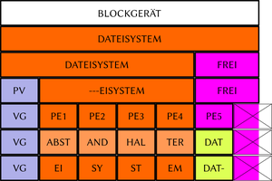

LVM nachträglich einrichten
Achtung!
Die Verwendung dieses Howto geschieht auf eigene Gefahr. Bei Problemen mit der Anleitung melde dies bitte in der dazugehörigen Diskussion und wende dich zusätzlich an den Verfasser des Howtos.
Artikel für fortgeschrittene Anwender
Dieser Artikel erfordert mehr Erfahrung im Umgang mit Linux und ist daher nur für fortgeschrittene Benutzer gedacht.
Hinweis:
Diese Howto-Anleitung wurde zuletzt von frostschutz am 24.10.2016 unter Ubuntu 16.10 erfolgreich getestet.
Problembeschreibung¶
Man hat eine Installation ohne LVM vorgenommen, oder sonst eine Partition / Blockgerät ohne LVM direkt mit einem Dateisystem formatiert, und möchte nun nachträglich doch LVM einsetzen, ohne alle Daten umkopieren zu müssen. Die nachträgliche Einrichtung von LVM ist unter bestimmten Randbedingungen möglich.
Zwar würde eine Formatierung mit LVM normalerweise den Anfang des Dateisystems überschreiben. LVM erzeugt jedoch logische Blockgeräte, die von der physikalischen Anordnung der Daten weitgehend unabhängig sind. Es ist somit möglich, den Anfang des Dateisystems ans Ende des Blockgerätes zu verlegen. Korrektes Alignment vorausgesetzt, können die restlichen Daten an Ort und Stelle verbleiben.
Ein Dateisystem belegt im Normalfall den gesamten Speicherplatz des Blockgerätes, auf dem es erstellt wurde. LVM kann nur vielfache der PE-Size verwenden, so daß ggf. der letzte angebrochene PE am Ende des Blockgerät nicht mehr für das Dateisystem selbst nutzbar ist. Die LVM-Metadaten selbst liegen am Partitionsanfang und müssen in unserem Falle aus Alignment-Gründen auf die PE-Size angehoben werden.
Hinweis:
Die Mindestanforderung für die nachträgliche Einrichtung von LVM ist also,
das Dateisystem um die doppelte PE-Size zu verkleinern,
oder
die Partition / das Blockgerät um die doppelte PE-Size zu vergrößern,
so daß effektiv der von LVM benötigte Platz für Metadaten/Overhead auf dem Blockgerät freigegeben wird. Mindestanforderung heißt: es darf ruhig mehr sein.
Wichtige Vorbereitung¶
Zunächst ist eine schlimme Falle in LVM zu deaktivieren. Wenn in der Datei /etc/lvm/lvm.conf die Variable issue_discards=1 gesetzt ist, ist kompletter Datenverlust auf SSDs, in VMs, und bei Loop-Devices vorprogrammiert. Bei Ubuntu ist dies leider Standard, und ein lvresize/lvremove ist somit nicht rückgängig zu machen, da LVM dann ein discard/TRIM durchführen würde.
Um diesen Wert zu prüfen kann der folgende Befehl verwendet werden:
# lvm dumpconfig | grep discards issue_discards=0
Ist der Wert nicht Null, muss er durch editieren der /etc/lvm/lvm.conf auf 0 gesetzt werden, was nach dem editieren nochmals zu prüfen ist.
Anleitung¶
|  |
| Illustrierung der einzelnen Schritte |
Achtung!
Nochmal:
Dateisystem um
2*PEkleiner als das Blockgerät.In der
lvm.confistissue_discards=0.
Diese Anleitung richtet sich an Experten, die mit LVM bereits bestens vertraut sind. Kompletter Datenverlust ist möglich.
Hinweis:
Es wird ausschließlich das Anlegen von LVM selbst beschrieben, ohne weitere Konfigurationschritte. Die Vergrößerung von Partitionen bzw. Verkleinerung von Dateisystemen (z.B. parted/resize2fs) sowie Aktualisierung von /etc/fstab, Bootloader, Initramfs, ... ist an anderen Stellen ausführlich beschrieben und soll hier nicht wiederholt werden.
Die Ausgangssituation ist ein Blockgerät das hinreichend größer ist als das darauf befindliche Dateisystem und somit die o.g. Anforderungen erfüllt. Das Blockgerät wurde also vergrößert oder das Dateisystem verkleinert. Wer diese Situation an einem Loop-Gerät üben will kann dies folgendermaßen erzeugen:
1 2 3 4 | # truncate -s 2G loop.img # losetup --find --show loop.img /dev/loop9 # mkfs.ext4 /dev/loop9 1G |
In diesem Fall ist /dev/loop9 ein Blockgerät der Größe 2G, das Dateisystem belegt jedoch nur 1G. Wer das Ergebnis später auf Korrektheit prüfen will, kann dieses Dateisystem mounten und Testdateien darauf anlegen. Das Dateisystem sollte im weiteren Verlauf jedoch nicht mehr gemountet sein.
Da der Anfang des Dateisystems überschrieben wird, ist es notwendig davon ein Backup zu erstellen. Dieses sollte mindestens 3*PE-Size umfassen, darf jedoch auch gerne etwas größer ausfallen.
1 2 3 4 | # dd if=/dev/loop9 bs=1M count=$((32*4)) of=dateisystem-anfang.img 128+0 records in 128+0 records out 134217728 bytes (134 MB) copied, 0.987076 s, 136 MB/s |
Der Anfang des Dateisystems ist somit gesichert und LVM kann angelegt werden. Dieses Beispiel verwendet (ohne besonderen Grund) eine PE-Size von 32 MiB. Die gewünschte Größe ist sowohl bei pvcreate und vgcreate anzugeben.
1 2 3 4 5 6 | # pvcreate --dataalignment=32M /dev/loop9 WARNING: ext4 signature detected on /dev/loop9 at offset 1080. Wipe it? [y/n]: y Wiping ext4 signature on /dev/loop9. Physical volume "/dev/loop9" successfully created # vgcreate --physicalextentsize=32M LoopVG /dev/loop9 Volume group "LoopVG" successfully created |
Damit ist nun das Dateisystem vorläufig Geschichte und an seinen Platz ist ein LVM-VG gerückt. Der innerhalb dieser VG verwendbare Platz startet bei 32 MiB (Alignment) und endet, sofern die Partition nicht zufällig genau einem vielfachen von 32 MiB entspricht, bis zu 32 MiB vor Partitionsende.
Legt man nun einfach ein LV auf die volle Größe an, beginnt dieses am falschen Punkt, nämlich 32 MiB im Dateisystem. Die ersten 32 MiB müssen jedoch am Ende des Blockgeräts, hinter dem Dateisystem liegen. Dies ist am einfachsten durch einen temporären Abstandhalter zu erreichen.
1 2 3 4 5 6 7 8 | # lvcreate -l100%free -n abstandhalter LoopVG Logical volume "abstandhalter" created. # lvresize -L-32M LoopVG/abstandhalter WARNING: Reducing active logical volume to 1.94 GiB THIS MAY DESTROY YOUR DATA (filesystem etc.) Do you really want to reduce abstandhalter? [y/n]: y Size of logical volume LoopVG/abstandhalter changed from 1.97 GiB (63 extents) to 1.94 GiB (62 extents). Logical volume abstandhalter successfully resized |
Der Abstandhalter wurde auf die volle Größe angelegt und anschließend um 32 MiB (1 PE) verkleinert. Somit sind nun 32 MiB am Ende frei und man kann das eigentliche Dateisystem-LV anlegen.
1 2 | # lvcreate -L32M -n dateisystem LoopVG Logical volume "dateisystem" created. |
Das Dateisytem-LV beginnt somit mit dem letzten PE und der Abstandhalter kann dementsprechend wieder entfernt und das LV vergrößert werden.
1 2 3 4 5 6 | # lvremove LoopVG/abstandhalter Do you really want to remove active logical volume abstandhalter? [y/n]: y Logical volume "abstandhalter" successfully removed # lvresize -l+100%FREE LoopVG/dateisystem Size of logical volume LoopVG/dateisystem changed from 32.00 MiB (1 extents) to 1.97 GiB (63 extents). Logical volume filesystem successfully resized |
Das dateisystem-LV verwendet nun 100% des verfügbaren Speicherplatzes. Die ersten 32 MiB davon liegen jedoch physikalisch am Ende des Blockgeräts; dahinter sind die Daten mit der ursprünglichen Partition identisch, da der 1. PE (jetzt der 2. PE innerhalb des LV) durch das gewünschte Alignment von 32 MiB, ebenso just am physikalischen Offset von 32 MiB liegt. Dies sollte jedoch an dieser Stelle nochmals überprüft werden.
Zurückspielen des im LV fehlenden Dateisystem-Anfangs. Es ist wichtig hier nur so wenig wie möglich zurückzuschreiben und nicht alles auf einmal, da sonst nichts geprüft werden kann. Eigentlich sollte es genügen, 32 MiB zurückzuschreiben, da ab 32 MiB das 1. PE beginnt das nicht verändert worden sein sollte. Tatsächlich nullt LVM beim Erstellen eines LV die ersten 4 KiB, so auch beim Erstellen des Abstandhalters. Daher müssen tatsächlich etwas mehr als 32 MiB zurückgeschrieben werden:
1 2 3 4 | # dd bs=1M count=$((32+1)) if=dateisystem-anfang.img of=/dev/LoopVG/dateisystem 33+0 records in 33+0 records out 34603008 bytes (35 MB) copied, 0.0509655 s, 679 MB/s |
Überprüfung mittels cmp:
1 2 | # cmp dateisystem-anfang.img /dev/LoopVG/dateisystem cmp: EOF on dateisystem-anfang.img |
Es wurden nur 33 MiB auf das LV zurückgeschrieben, das zuvor erstellte Backup war jedoch 128 MiB groß. cmp hat somit 128 MiB geprüft und keine Unterschiede gefunden. Alles OK!
Zur weiteren Sicherheit Dateiystem prüfen:
1 2 3 4 5 6 7 8 | # fsck.ext4 -f -n /dev/LoopVG/dateisystem e2fsck 1.42.13 (17-May-2015) Pass 1: Checking inodes, blocks, and sizes Pass 2: Checking directory structure Pass 3: Checking directory connectivity Pass 4: Checking reference counts Pass 5: Checking group summary information /dev/LoopVG/dateisystem: 12/65536 files (0.0% non-contiguous), 258048/262144 blocks |
Anschließend zunächst read-only mounten und Dateien prüfen. Der Vorgang sollte damit abgeschlossen sein.
Notbremse¶
Treten bei einem Schritt Fehler auf, hat man verloren. Als Sofortmaßnahme ist die VG zu deaktivieren und das zuvor erstellte Backup zurückzuspielen:
1 2 | # vgchange -a n # cp dateisystem-anfang.img /dev/loop9 |
Und sofern man die Mindestanforderung nicht vergeigt und nichts ins LV-Dateisystem geschrieben hat, sollte damit wieder alles beim alten sein.
Links¶
https://github.com/g2p/blocks#readme — bietet ein Programm
lvmifydas nach dem gleichen Prinzip arbeitetHowto
 - Übersicht aller Howto-Artikel
- Übersicht aller Howto-Artikel
- Erstellt mit Inyoka
-
 2004 – 2017 ubuntuusers.de • Einige Rechte vorbehalten
2004 – 2017 ubuntuusers.de • Einige Rechte vorbehalten
Lizenz • Kontakt • Datenschutz • Impressum • Serverstatus -
Serverhousing gespendet von